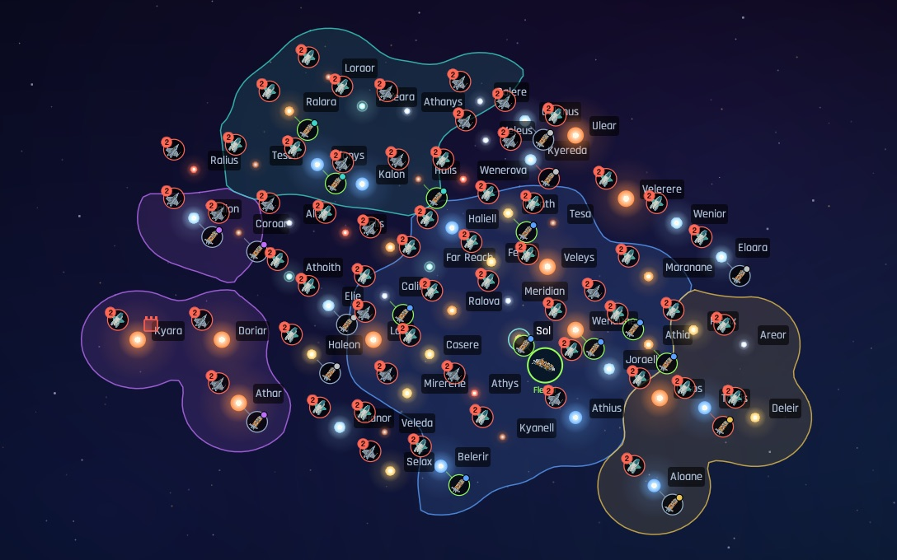

Space trading · Strategy
Star Trader
Haul cargo between star systems, outrun or hunt raider bands, run down traders as a pirate, and grow a fleet. Prices follow supply and demand at every port, and factions police their territory.
Best on a desktop browser. About an 18 MB download to start; the soundtrack streams in while you play, and sound begins after your first click. Your saves stay in this browser between visits. Early prototype.